This working plan highlights real components already changed and keeps the remaining review visible. All images are authentic preview captures using documented fixture data.
Review source snapshot ddd662d7 · 710 inventory entries · 0 awaiting review · 186 in partial review. Capture provenance appears on each component; older images were not recaptured at this review snapshot.
The app-wide audit is still in progress. The source reading pass is complete; findings, rendered checks and production release remain separate steps. Main merge, prepared migrations and final release checks remain pending. Read the evidence and limitations.
Mobile captures retain their height; mapped mobile highlights are available on the client form.
src/components/marketing/dneskai/audio-trends-notice.tsx · Czech dark · Actual synthetic optional-trend outage · Finding 313, application 0c041e17, 27 October
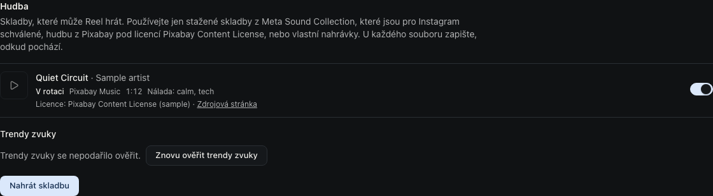
12
A failed optional recommendation read keeps the confirmed uploaded tracks visible. Ready, unavailable and disabled states have separate behavior; retry retains the exact saved sound.
The desktop message/action fits its own content rather than stretching across spare width. Mobile gives the same action the full available width and a 44px target.
Track layout, captured toggles/uploads and complete page reconciliation remain separate follow-ups. This capture contains synthetic application fixtures and no production record.
Career: complete template search with bounded choices
src/components/panels/career-template-picker.tsx · Czech dark · Actual complete local template picker · Finding 307, application cf892a72, 26 October
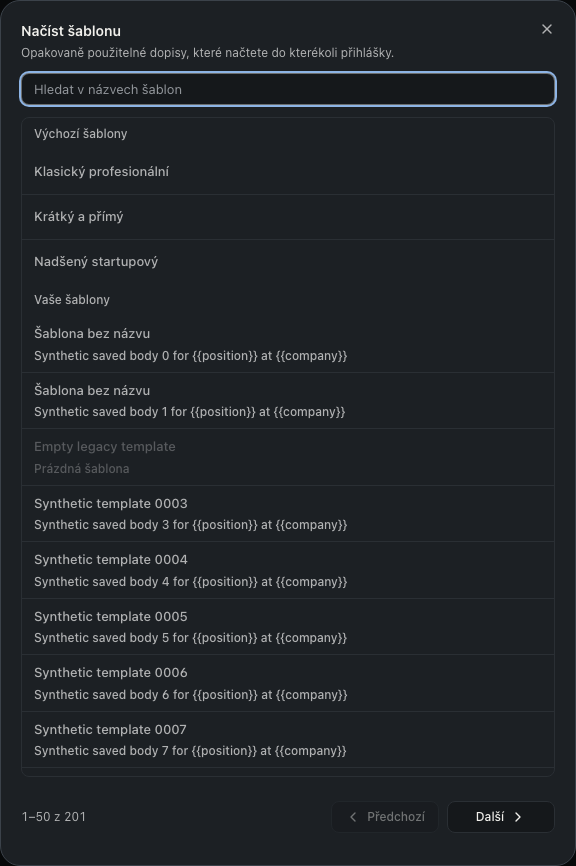
123
The picker mounts only while open and shows at most fifty saved choices plus three built-ins. Search, including Czech names without diacritics, and local pages keep the complete existing library reachable without another read.
Blank legacy names have a localized display fallback; empty content is a readable disabled choice. Names and a bounded body preview help distinguish choices without rewriting the stored template.
Content rows grow on desktop so the preview line stays readable. Refusing replacement preserves the original letter and search; closing or selecting returns focus to the trigger. Six-width, axe and both-draft checks pass.
Career: bounded history with complete local pages
Complete history, keyboard paging and disclosure position checked · release pending
src/components/panels/jobs-panel.tsx · Czech dark · Actual last local history page · Finding 305, application b8f9589c, 26 October
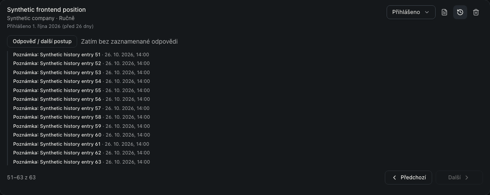
123
An open history mounts at most fifty events while keeping its complete owned collection and order. Closing and reopening retains the selected page.
The last thirteen of 63 synthetic events remain reachable through the local range and equal actions. Paging makes no additional database request.
The existing application row keeps supported destinations, matching mobile targets and confirmed mutation recovery. Separate native checks cover keyboard activation, six-width reflow and axe.
Career: fitted previous-letter sidebar
Complete local letters, fitted sidebar and readable pager checked · release pending
src/components/panels/jobs-panel.tsx · Czech dark · Actual oldest of 1,201 complete previous letters · Finding 305, application b8f9589c, 26 October
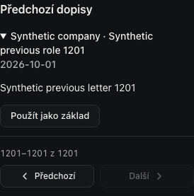
123
Only fifty previous letters mount on each page, and all 1,201 remain reachable. Reusing the oldest letter preserves the workspace draft guard without another collection read.
The sidebar fits its own content instead of stretching beside the editor. The same 274px-wide fixture falls from 844px to 276px; expanded content still grows naturally.
A stacked pager keeps the complete range on one line and equal controls below it. The populated-letter filter is memoized by its source collection instead of repeated for every typed character.
Career: complete rows and matching actions
Supported-only links, complete long text and shared action sizes checked · remaining density/release pending
src/components/panels/jobs-panel.tsx · Czech dark · Actual synthetic application row · Finding 304, application 09e626a4, 26 October
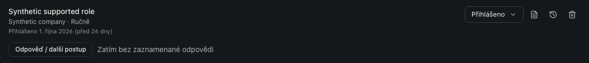
123
Titles and company text stay complete. Unsupported stored destinations remain readable text; valid HTTP(S) links retain their destination and external protections. Manual origin has a localized label.
Stage, letter, history and removal match at 32px on desktop and 44px on mobile. The mobile title takes its own row so the actions do not squeeze its text.
Response/follow-up stays nearby and existing capture/confirmation/focus behavior remains. Separate long-content fixtures cover unbroken titles, companies and notes at all six widths without another collection read.
Career: preserved private Oslo drafts
Captured private drafts, stable creation and navigation save checked · guidance/release pending
src/components/panels/oslo-career-workspace.tsx · Czech dark · Actual retained synthetic Oslo letter conflict · Finding 302, application bf0a9def, 26 October
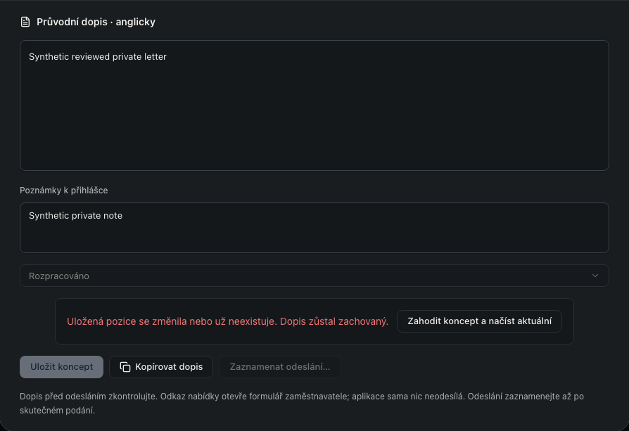
123
Six letter rows replace thirteen. Captured changes update only edited letter, notes or readiness; the public role metadata cannot replace private title/company/description fields.
A stale save keeps selectable private text. Retry preserves one exact attempt, and failed reload keeps it until an explicit successful discard/reload adopts fresh context.
The first confirmed save keeps its editor mounted. Record application uses the confirmed owned row; complete older reads are cancelled and confirmed writes avoid another collection download.
src/components/panels/jobs-panel.tsx · Czech dark · Actual uncertain template and later parent letter · Finding 301, application ab7e3d32, 26 October
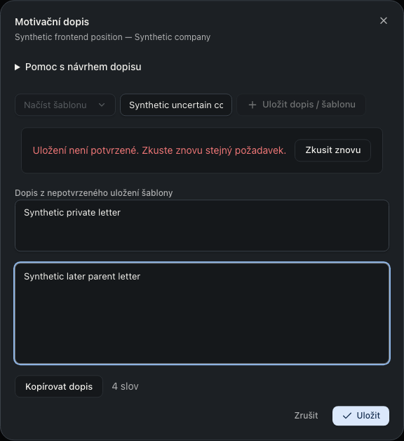
1234
A named template protects navigation independently of the parent letter. A parent save stays mounted until the other draft is handled; save-and-leave can finish both without an accidental unmount.
An unavailable template write keeps one exact retry identity. If the parent letter changes, the attempted original body stays separately selectable and the retry still uses that original intent.
The newer parent letter remains editable. Confirmed application recording retires further source writes while keeping an unsaved template available. No automatic retry, collection download or name-based overwrite occurs.
src/components/panels/career-templates-dialog.tsx · Czech dark · Actual retained synthetic template conflict · Finding 300, application 59539128, 26 October
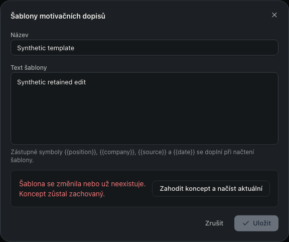
123
One stable creation ID survives uncertain retries. Editing captures the opening owner/version and changes only edited fields; confirmed receipts avoid another collection download.
The six-row letter remains selectable after a conflict. Dirty and pending exits are guarded, and only successful explicit discard/reload replaces the local name and text.
Fifty-row local pages retain access to the complete template collection. Removal waits for the exact owned receipt; shared buttons preserve full mobile targets without optimistic collection rollback.
Career: one letter heading and aligned template controls
src/components/panels/jobs-panel.tsx · Czech dark · Actual retained letter after the toolbar repair · Finding 298, application 7f91e36f, 26 October
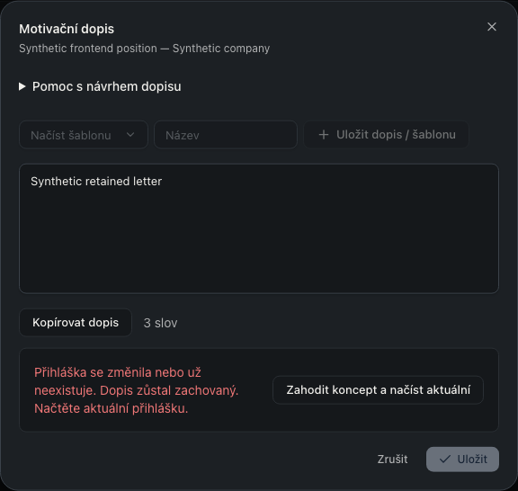
123
The load control, optional name and save action match the shared 32px desktop/44px mobile field sizes. A narrower name field fits the complete toolbar on one desktop row; mobile keeps full labels and targets.
The dialog has one visible letter heading. Its textarea retains its accessible label, and both application and letter consumers keep normal keyboard editing and copy behavior.
Failed writes retain selectable text and explicit reload. The before-state remains in finding 297's dated capture; subsequent findings 299–307 cover template and Saved-letter persistence; broader density remains separate.
Career: retained existing letters and confirmed removal
Earlier captured letter/deletion state · toolbar repaired in finding 298; release pending
src/components/panels/jobs-panel.tsx · Czech dark · Actual retained synthetic application letter conflict · Finding 297, application c7186322, 26 October
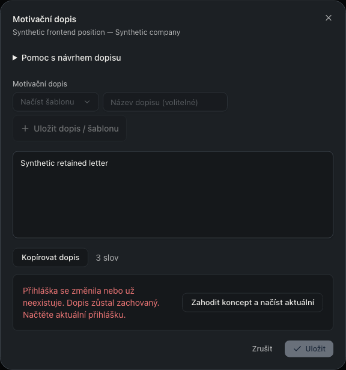
12
A failed existing-letter save keeps its text selectable. Only an explicit successful discard/reload adopts newer context; an unchanged letter cannot send another write.
Original owner/version receipts protect letter edits and deletions. Rows and history stay visible until confirmed removal; stale work is retained and confirmed removal restores nearby focus.
This dated before-state shows the repeated letter label and uneven template controls. Finding 298, above, removes that duplication and aligns the toolbar. Later findings 299–307 cover template persistence; wider density remains separate.
Career: atomic progress and retained contact edits
src/components/panels/career-progress-dialog.tsx · Czech dark · Actual retained synthetic response/contact conflict · Finding 295, application 629c89ff, 26 October
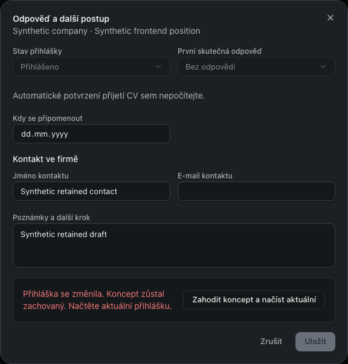
123
The bounded 576px editor pairs related stage, response, date and contact controls on desktop. Mobile stacks complete labels and touch targets. Shared status labels replace the differing editor wording.
The original owned application version binds one atomic progress/contact request. Stage controls submit only the changed stage, preserving newer notes; confirmed receipts avoid another complete download.
Conflict and failed reload keep the typed contact and note selectable. Only an explicit successful discard/reload replaces them with fresh context; pending work guards exits and retires on owner change or unmount.
Career: reachable letters and retained application drafts
src/components/panels/jobs-panel.tsx · Czech dark · Actual retained synthetic application conflict · Finding 293, application e5c3bc55, 26 October
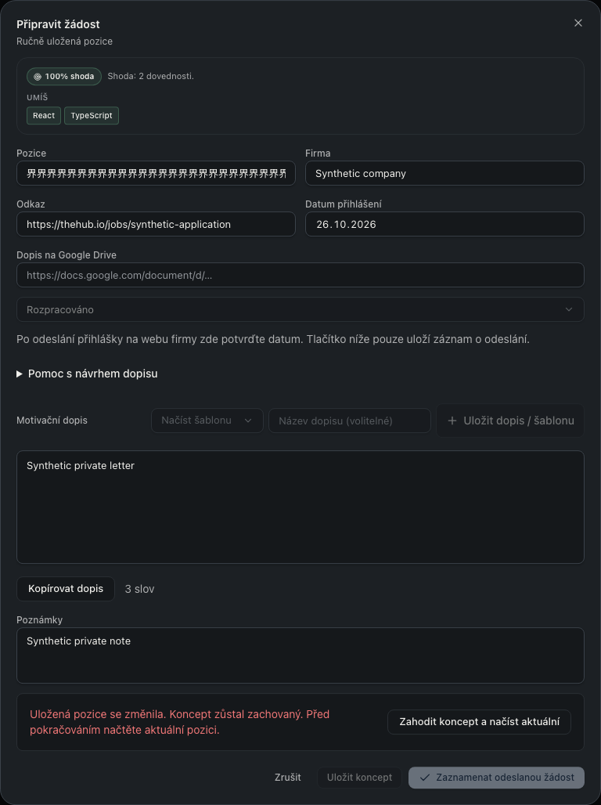
123
Later finding 309 protects unbuilt guidance inputs and keeps retained text selectable after confirmed recording. This image retains its original capture date/source.
Related fields share the centered 768px form. The repeated position subtitle is removed, and matching actions wrap without hiding complete labels or mobile targets.
An existing letter opens directly. Optional guidance mounts on first use and retains its working text when closed; blank letters keep guidance open. The same fixture's content is about half its earlier height.
A changed Saved version keeps the local title, note and letter selectable. Pending actions protect exits, uncertain retries keep the original intent, and only an explicit successful discard/reload adopts newer source context.
Career: retained manual details and protected private history
src/components/panels/career-saved-positions.tsx · Czech dark · Actual retained draft and recovered synthetic private record · Finding 286, component SHA 0666ff32195b, 26 October
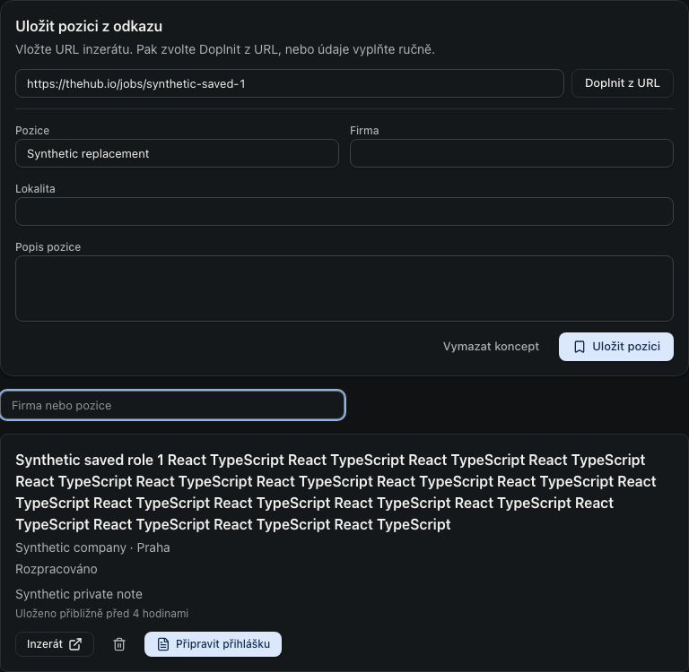
123
The form and collection share a centered width. Consistent padding, paired metadata fields and a shorter description field reduce unused space; manual entry disappears once expanded.
A duplicate URL preserves the existing private letter and note. Reload keeps the typed draft, while a confirmed manual save remains reachable for this session without changing stored location preferences.
Explicit import sends only the URL and keeps newer typed fields. Stable retries, pending exits, stale removal and nearby focus are checked; long titles remain readable without overflow.
Career: retained selection and confirmed changes
Captured confirmation, retry, reload and focus checked · other private controls/density review pending
src/components/panels/jobs-panel.tsx · Czech dark · Actual synthetic unconfirmed bulk change · Finding 283, component SHA 132d26349a52, 26 October
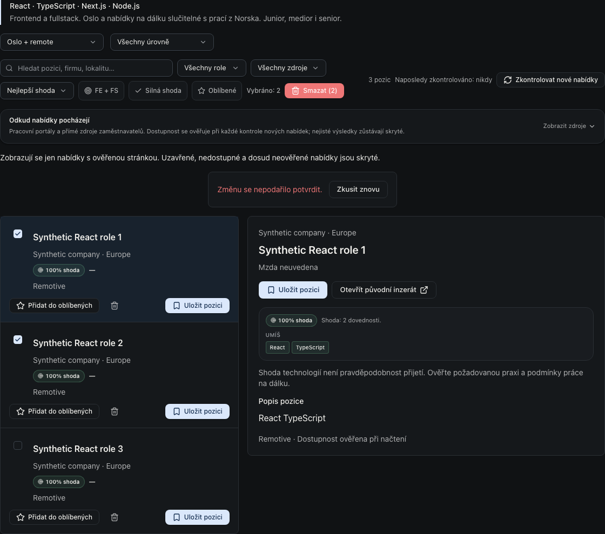
123
Failed bulk changes retain the visible selection. Retry uses the original owner, source and state versions; cancellation sends no write.
Save and triage share one bounded feedback component. The desktop notice fits its content; mobile keeps a full-width 44px recovery action.
Only confirmed changes clear the affected selection. Focus returns to the initiating action or a nearby remaining offer, with later interactions preserved. Scope/availability copy and the filter/board density remain separate review work.
src/components/panels/jobs-panel.tsx · Czech dark · Actual synthetic unconfirmed-save notice · Finding 281, component SHA 0bafdb74edd9, 26 October
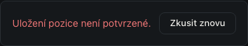
12
A short retained notice fits its desktop message and action instead of stretching into spare width. Mobile gives the retry a full-width 44px target.
An uncertain save keeps the original retry identity. Confirmed capture preserves an existing private title and draft; no discovery upsert overwrites them.
Failure restores focus to Save; confirmation moves it to the position title. Newer keyboard activity and leaving Career prevent a late focus or success notice.
Career: complete stage columns and retained move focus
Complete local paging, captured moves and focus checked · migration/release pending
src/components/panels/career-board.tsx · Czech dark · Actual synthetic board component captures in a tall viewport · Finding 278, component SHA b8e17ae1cd60, 26 October
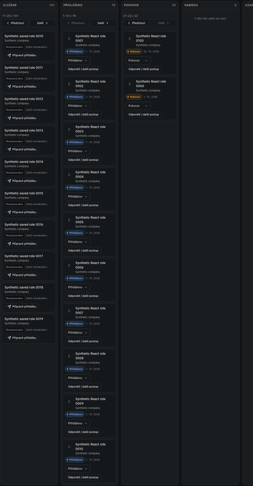
1
Each equal-width stage shows ten cards from its complete sorted collection. The count and stacked pager keep all records reachable without another database or provider request.
Mobile controls and drag handles keep 44px targets. An already-recorded position stays in history and leaves the Saved board column; distinct query-based vacancies remain separate.
A confirmed move reveals the destination page and returns focus. Failure retains the original card; a newer action prevents a late focus jump. Captured metadata writes remain under review.
src/components/panels/jobs-panel.tsx · Czech dark · Actual synthetic preview recovery card crops · Finding 267, component SHA 069f74a8d398, 25 October
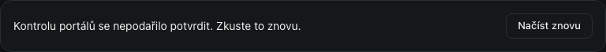
12
The bounded 768px card stays centred. Desktop places the complete message and action on one row; mobile keeps one full-width 44px action beneath the message.
One retained error replaces duplicate notice text. A failed check remains unconfirmed; an accepted check with a failed local load has its own recovery without sending the feed request twice.
Pending work prevents same-frame duplicates and retires on owner change or unmount. Ordinary previews and the public tour send no provider request.
src/components/panels/plans-panel.tsx · Czech dark · Actual synthetic preview component crops (first 800px) · Goals/Home application d398521, 25 October
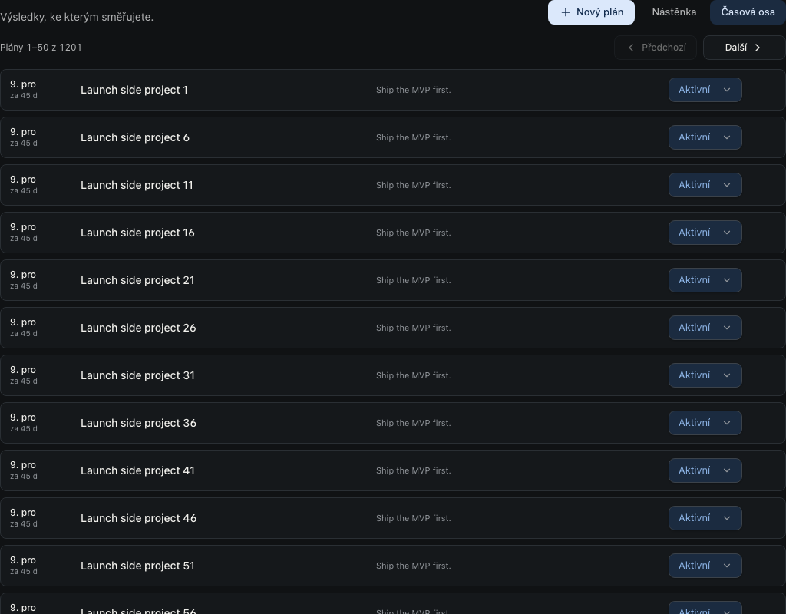
12
Only fifty of the complete 1,201 synthetic records mount on a page. The visible range and equal pager actions retain access to every row without another database request.
Desktop title and note share a row beside equal-height status/removal controls. Mobile keeps the note readable and stacks controls.
Last-page deletion clamps the visible page and restores focus. Long content stays complete; static rows cannot cover the pager with old animation hit targets.
src/components/overview/recurring-plans.tsx · Czech dark · Actual synthetic preview component crops · Goals/Home application d398521, 25 October
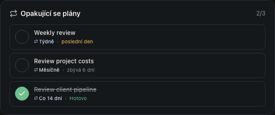
12
The compact widget keeps its existing peer-card width. Every completion action has a contextual name and matching mobile target.
Completion changes only after a verified row receipt, preserves the other fields and retains the row after failure. Completed text remains readable without whole-row dimming.
Larger complete collections use the same fifty-row local pages. Moving a completed row to a later page restores focus to a visible control without refetching.
Settings: compact supported data downloads
Targeted complete downloads, guest and UX checked · migration/release pending
src/components/settings-data-export.tsx · Czech dark · Actual complete Settings export card crops · Settings export application e07a445, 25 October
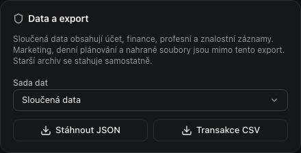
123
The guidance names the supported combined datasets and keeps the legacy archive separate. It avoids presenting a partial account download as a full backup.
One labelled selector replaces nine JSON actions. It stays readable within the existing matching Settings card width.
The two download actions share width and height, wrap within narrow cards and keep full mobile targets.
Settings: retained selection and download recovery
Targeted complete downloads, guest and UX checked · migration/release pending
src/components/settings-data-export.tsx · Czech dark · Actual complete Settings export card crops · Settings export application e07a445, 25 October
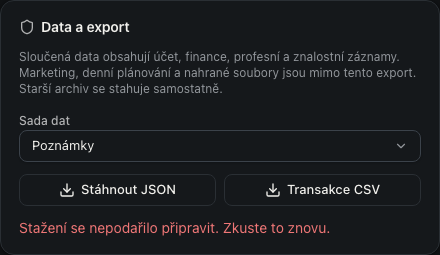
123
The selected Notes dataset stays available after a failed download. Retry uses that same selection and the captured owner.
Pending work locks the selector and both equal actions. A started browser action is distinguished from a saved file.
One localized message gives safe retry guidance without database details. Public tours announce sign-in and send no private request.
Competition: retained draft and URL validation
Targeted reads, writes and UX checked · migration/release pending
src/components/competition/competitor-dialog.tsx · Czech dark · Actual complete dialog crops · Competition application 4ead277, 25 October
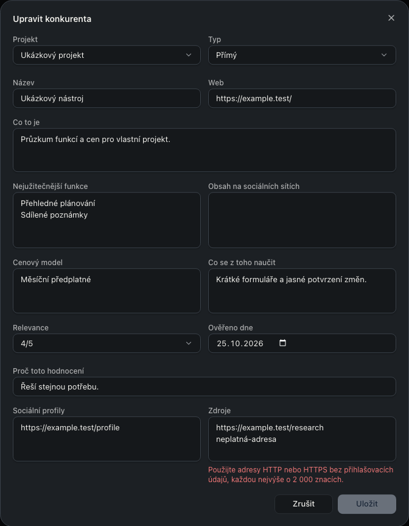
123
The bounded dialog aligns fields and matches paired footer actions in both languages. Mobile controls use the full width. Desktop pairs related fields; mobile keeps a readable single column.
An invalid URL line stays visible beside its linked error. The save action stays disabled until correction; unsupported lines are never discarded silently.
Failed saves retain the draft and stable identity. Pending saves guard fields and exits; editor conflict guidance stays separate from list and deletion recovery.
Competition: retained records and explicit recovery
Targeted reads, writes and UX checked · migration/release pending
src/components/panels/competition-panel.tsx · Czech dark · Actual failed-refresh and deletion-conflict crops · Competition application 4ead277, 25 October
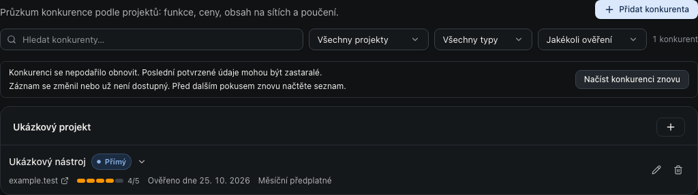
12
The complete confirmed list stays visible through a failed refresh. One retry sits beside short guidance on desktop and uses the full mobile width.
Deletion recovery asks for a reload without mentioning a nonexistent draft. A confirmed row edit cannot erase a prior collection warning; both views retain it until a successful complete read.
Confirmed changes preserve newer records, protect pending drafts and restore keyboard focus after removal. These screenshots use synthetic records and make no owner-record change.
Competition: centered rows and local paging
Targeted reads, writes and UX checked · migration/release pending
src/components/competition/competition-pagination.tsx · Czech dark · Actual first 800px viewport crops of a 1,201-record snapshot · Competition application 4ead277, 25 October
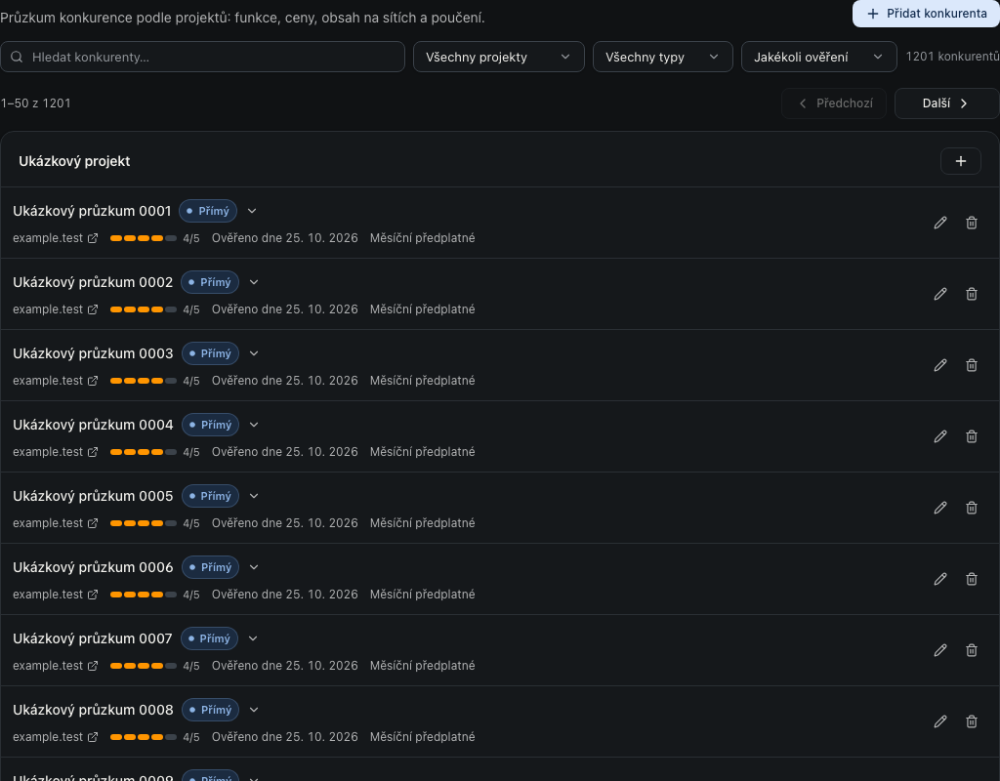
12
A centered 1,024px maximum keeps the desktop controls and compact rows aligned. Short descriptions and consistent filters reduce spare width; mobile stacks controls.
Only fifty records mount at once. A named local pager shows the visible range; full-snapshot search reaches later records without another database request. Missing project details retain their research.
The single-project header omits the repeated total; the project tab omits its repeated destination title. Distinct multi-project totals and page ranges stay visible. Local CPU parity evidence is linked below.
Clients: visible refresh and action recovery
Captured persistence and recovery checked · migration/release pending
src/components/panels/clients-panel.tsx · Czech dark · actual synthetic failed-refresh and conflict states · Client recovery application (5d7da1d), 25 October
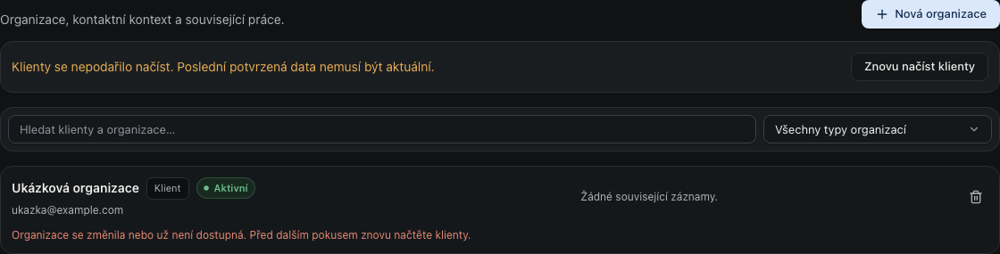
12
Confirmed clients stay visible when a refresh fails. Short guidance and one retry share a desktop row; mobile gives the message and action their full width.
An unconfirmed deletion remains visible outside the row disclosure. Reload confirms current data before the next captured-version action; stale callbacks preserve newer cache data.
Saved client changes use exact owned receipts. Pending work protects exits, and confirmed deletion restores keyboard focus. These captures use mocked reads and make no owner-record changes.
Client draft: captured fill and retained saves
Draft, confirmed writes and exits checked · migration/release pending
src/components/panels/clients-panel.tsx · Czech dark · actual unavailable fixture form · Client recovery application (5d7da1d), 25 October
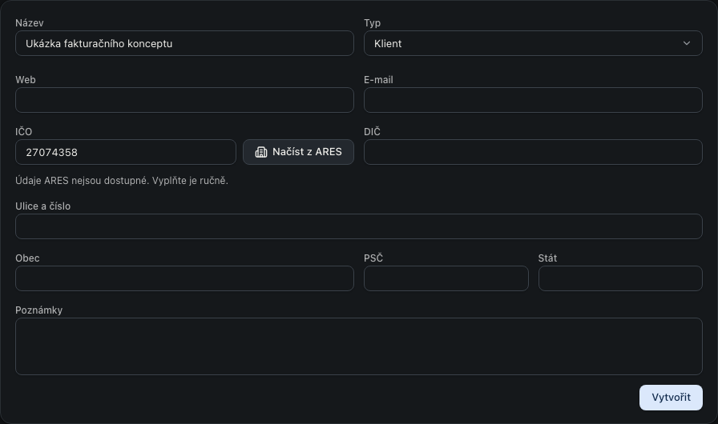
12
The registration number and lookup retain equal heights and readable width. Tax fields stack before middle-width columns would squeeze the number. Foreign registration numbers keep their letters and formatting.
The centered bounded form keeps compact desktop footer actions and full-width mobile actions. Cancel offers guarded discard rather than silently losing the draft.
A failed or mismatched fill keeps typed values. Changed input, draft or owner cancels the lookup, and later name edits survive. Unconfirmed saves retain the draft and retry id; pending writes lock fields and exits.
Confirmed category choices
Implemented · final release pending
src/components/category-select.tsx · Czech · actual synthetic category dialog crops · Finding 208 application snapshot (f3ff658), 25 October
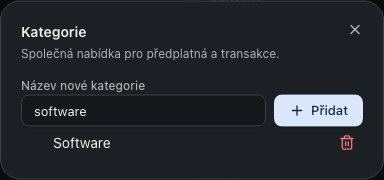
12
A persistent label and matching input/Add controls fit one row in a compact centered dialog. Long names wrap within shared target sizes.
Failed drafts remain available. Confirmed creation returns the canonical name; pending work protects exits and does not submit the parent entity form.
Removing a managed choice requires its captured receipt and keeps existing entity labels. Keyboard focus returns to a surviving control; failed reads show Retry.
Settings: private drafts and matching fields
Owner isolation and retained drafts checked · release pending
src/components/panels/settings-panel.tsx · English desktop/light · Czech mobile/dark · Finding 202 application snapshot (ecfb547), 25 October
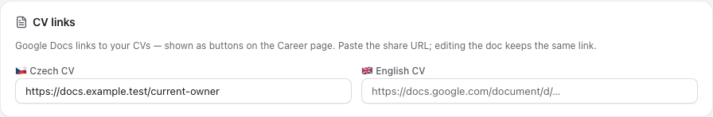
1
The two CV fields share desktop width and control height; mobile stacks their complete labels. The form preserves an edited link after a mismatched or failed save.
Private CV/Career drafts now belong to the captured owner. Unowned legacy keys remain untouched and unused; guest edits stay in separate memory. Late synchronization preserves unsaved private edits.
All preference callers capture owner and lifetime before queueing. Only matching receipts confirm a save; leaving an unchanged CV field makes no request. The screenshot uses synthetic preview data.
Notes: consistent native typography
Editor and toast font consistency checked · locale review pending
src/app/globals.css · English desktop/light · Czech mobile/dark · Finding 202 application snapshot (ecfb547), 25 October
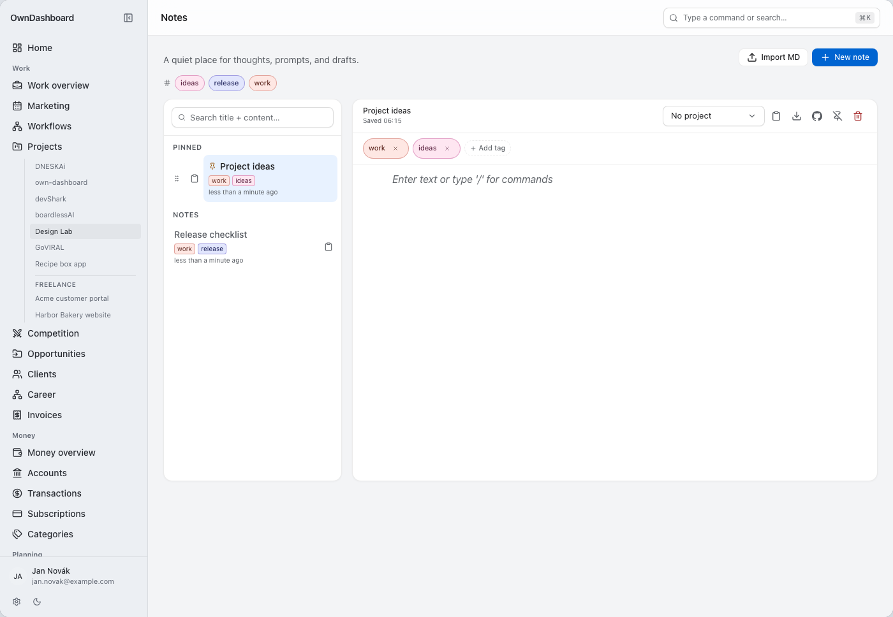
1
The editor and toast controls now resolve the same approved native UI font stack as body copy; direct BlockNote defaults no longer select a different family.
Native EN/CS checks cover six widths, keyboard naming, accessibility and overflow. Technical monospace and separate document/artwork fonts keep their own contracts.
The Czech capture still shows an English library placeholder. Locale and remaining editor interaction review stays open; font consistency alone does not establish translation completeness.
DNESKAi: recover a legacy first slide
Policy and cleanup checked · migration/release pending
src/components/marketing/dneskai/lab/slide-inspector.tsx · Czech · actual legacy draft cleanup · Earlier audit captures, through bdd73ad
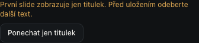
12
Every first slide offers the headline only. A legacy paragraph stays in the saved revision until the owner explicitly removes it from the draft; a short explanation sits beside the cleanup action.
The action has a compact desktop target and a full mobile target. An approved queued post can be returned with a note before editing; claimed or ambiguous publications remain protected.
Saving creates a new version that needs its own approval. SQL approval and claim checks are prepared in migration 117; no production record has changed.
Tasks: retained drafts and confirmed creation
Creation and repository recovery fixed · release pending
src/components/tasks/task-composer.tsx · Czech · actual task creation conflict · Earlier audit captures, through bdd73ad
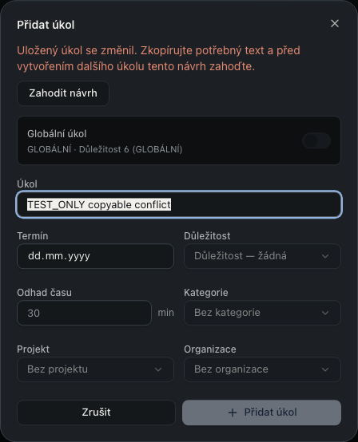
12
A failed save keeps the draft and its retry identity. A changed or removed receipt keeps the text selectable until explicit discard; pending saves guard fields and exits.
The paired footer actions share width and height, with full mobile targets. Related inputs share desktop rows and stack on narrow screens. Invalid minute estimates retain the draft and show field-linked guidance.
Confirmed rows cancel older collection reads before cache application. Confirmed completion/deletion and task rows are checked. Repository refresh/cleanup captures owner/source, guards pending exits and retains failed or conflicting work.
Tasks: centered groups and compact rows
Rows and repository recovery fixed · release pending
src/components/panels/todos-panel.tsx · Czech · actual Task rows with rich and long content · Earlier audit captures, through bdd73ad
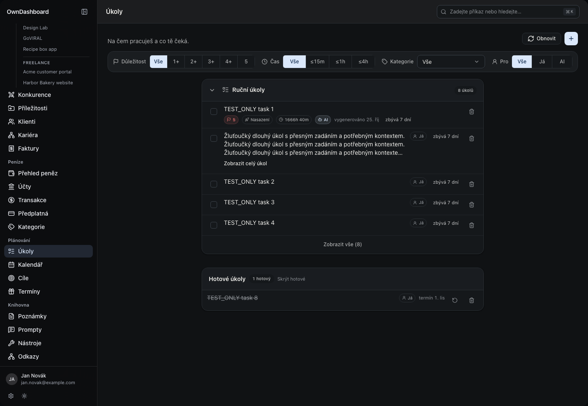
123
Shared dividers replace a border around each task. A single open group and its completed list share one centered bounded width; unequal task content keeps its natural height.
Short titles and metadata share a desktop row when they fit. Rich or mobile content wraps; measured three-line titles have a selectable full-text disclosure. Default-five rendering remains.
Completion, delete and reopen use equal visible targets. Permanent branch identity, confirmed manual writes and captured repository refresh/cleanup are checked. Account changes and pending exits cannot retarget an old operation.
Keyboard focus and native dark controls
Implemented · final release pending
src/app/globals.css · Czech · actual dark Calendar form with keyboard focus · Earlier audit captures, through bdd73ad
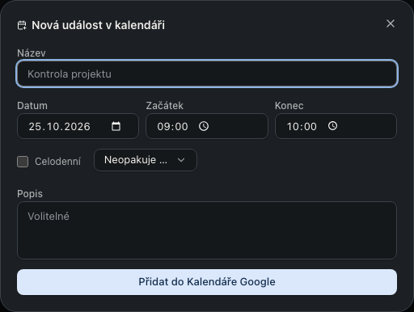
12
Opaque semantic focus colors remain visible on both themes. Eighty native button/field/checkbox samples exceed 5.51:1; forced colors retain a system outline when shadows disappear.
Native date/time picker glyphs now follow the selected app theme, including when the operating system prefers the opposite theme. Print retains a light scheme.
Calendar fields, form recovery and invoice print isolation pass their targeted checks. Native editor/toast font consistency is checked in finding 202. Whole-app and final invoice functional release checks remain open.
Weekly planning: retained drafts and compact actions
Save recovery fixed · aggregate review pending
src/components/work/weekly-planning.tsx · Czech · actual saved-version conflict with selected draft · Earlier audit captures, through bdd73ad
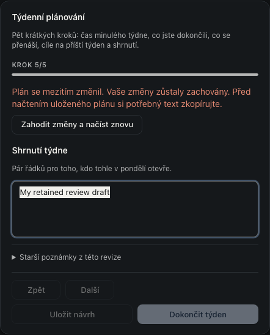
123
One visible summary title keeps the form compact while its textarea retains an accessible label. Read-only conflict text stays keyboard-selectable before explicit discard/reload.
Navigation actions match each other; Save Draft and Complete share one row with equal widths/heights and full mobile targets. Shorter Czech action text fits at 360 px.
Writes wait for an owned, version-bound receipt. Failed saves retain the draft; an account/week change freezes it until explicit discard/full reload. Remaining legacy aggregate-input checks and final release stay pending.
Invoice save recovery and reachable actions
Implemented · final release pending
src/components/invoices/invoice-form.tsx · Czech · actual failed-save footer crops · Earlier audit captures, through bdd73ad
1
One inline message keeps the failed save beside its retained draft and retry actions. Desktop fits the message and controls on one row when space permits.
Mobile secondary actions share a row; the primary action uses the next row when needed. Complete button areas stay above fixed navigation after native validation and focus changes.
The same save identity is reused after an uncertain response. Full invoice receipt, draft and navigation review remains pending.
Music preview failure and link recovery
Preview fixed · remaining library review pending
src/components/marketing/dneskai-audio-library.tsx · Czech · actual expired-preview state · Earlier audit captures, through bdd73ad
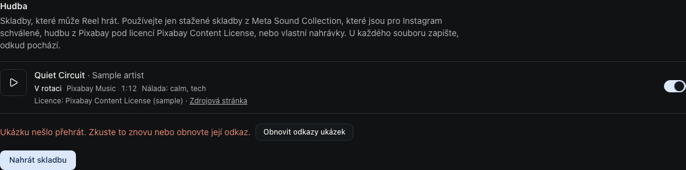
1
An unavailable preview keeps the track, licence and rotation choice visible, with a localized retry and link-refresh action.
Playback waits for an explicit click. Stop and leaving the view release its source; a late response cannot restart it. Native browser playback now passes the actual security policy.
The complete library selection, toggle receipts, upload recovery and trend reads remain under review.
Installation prompt and shared action sizes
Implemented · final release pending
src/components/mobile-fab.tsx · Czech · actual synthetic install-event banner · Earlier audit captures, through bdd73ad
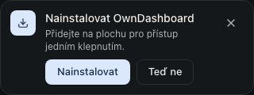
1
The compact banner keeps installation and dismissal together, with consistent controls and a named close action.
Dismissal survives blocked browser storage for the current document. Single-use invitations cannot trigger overlapping browser prompts.
Eight-width checks confirm the full targets and clearance above mobile navigation. No real installation was performed.
Source settings and retained drafts
Implemented · final release pending
src/components/marketing/dneskai-source-forms.tsx · Czech · actual source conflict dialog crops · Earlier audit captures, through bdd73ad
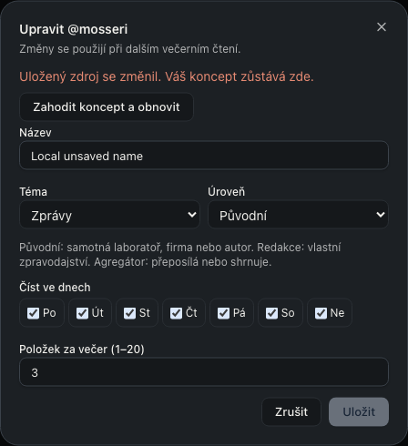
12
The dialog shows one source identity, aligned fields and matching action sizes. Mobile keeps complete labels and touch targets.
A changed source keeps the local name and item count until an explicit successful reload. Failed reloads preserve the draft too.
Confirmed changes update the unchanged list without another whole-list request. Pending work protects exits; raw invalid numbers stay available for correction.
Daily publishing limits and draft recovery
Implemented · final release pending
src/components/marketing/dneskai-daily-mix.tsx · Czech · actual conflict form crops · Earlier audit captures, through bdd73ad
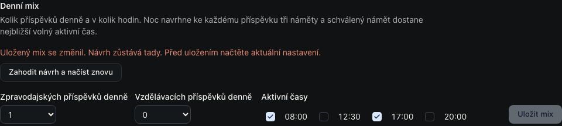
12
Desktop controls fit in one row; mobile keeps the complete field labels, active times and save action readable.
A changed saved mix preserves the local draft and offers one explicit discard/reload action, without a repeated error message.
Confirmed zero-post limits stay at zero. Unavailable settings cannot silently restore the default volume.
Sign-in and recovery
Implemented · final release pending
src/app/login/page.tsx · English desktop / Czech mobile · Earlier audit captures, through bdd73ad
1
One bounded sign-in card groups the action, error and guest access.
The mobile layout keeps controls reachable and gives errors a recovery path.
Repository notes
Implemented · final release pending
src/components/panels/repos-panel.tsx · Czech · Earlier audit captures, through bdd73ad
12
A centered column removes the repeated repository heading and keeps related actions together.
Editing, saving and publication preserve failed or newer drafts; mobile targets stay reachable.
Project operations and note recovery
Implemented · final release pending
src/components/panels/projects-panel.tsx · Czech · actual dialog crops · Earlier audit captures, through bdd73ad
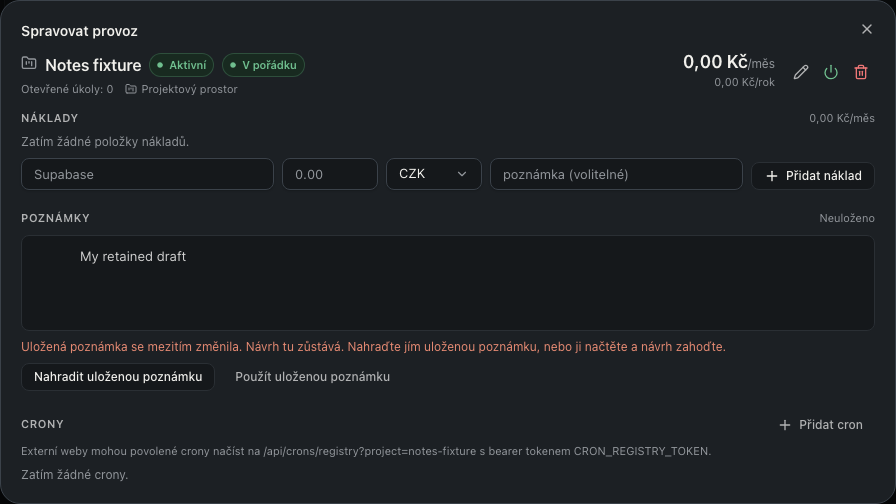
123
One dialog groups the project title, totals and controls; the redundant inner card and inert drag control are removed.
Cost fields stay usable on mobile and fit one row on desktop. Long project names and currency codes remain visible.
Conflicting notes keep the draft until an explicit replacement or reload. Failed drafts and pending operations protect exits.
Project edit recovery
Implemented · final release pending
src/components/projects/use-project-details-form.ts · Czech · actual conflict dialog crops · Earlier audit captures, through bdd73ad
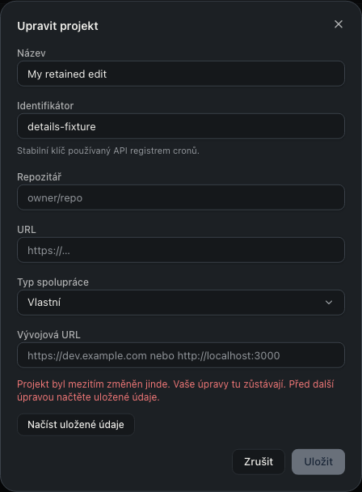
12
A bounded form keeps fields and recovery actions in one column with consistent controls.
A conflict preserves the in-memory draft. Reload requires an explicit discard; private notes stay outside metadata writes.
Verified repository renames retain their identity history. Failed lookups keep the form available for review.
Repository activity
Implemented · final release pending
src/components/projects/project-github-activity.tsx · Czech · actual card crop · Earlier audit captures, through bdd73ad
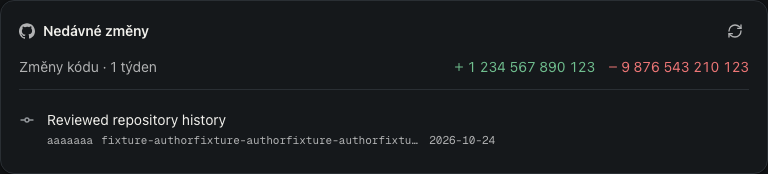
12
The centered activity card keeps its heading, refresh and code-volume window together.
Long author labels stay bounded while the date remains visible; counts follow the selected language. Failed refreshes retain confirmed history with Retry.
Notifications and mobile navigation
Implemented · final release pending
src/components/ui/toast.tsx · Czech · actual notice / mobile footer crops · Earlier audit captures, through bdd73ad
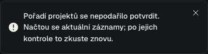
1
Error notices clear the bottom navigation at narrow and tablet widths, including the gap between the library and app breakpoints.
Short visible labels keep the bar steady; screen readers retain the full destination names. Close controls match the app's mobile and desktop targets.
Guest tour notice and privacy
Implemented · final release pending
src/components/guest-banner.tsx · Czech · actual notice crops · Earlier audit captures, through bdd73ad
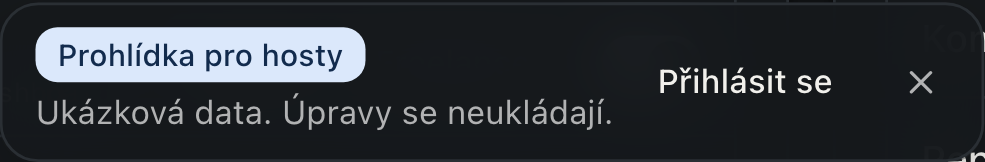
12
The notice keeps its complete explanation beside consistent sign-in and close actions.
Its empty outer layer leaves sidebar actions reachable, and the mobile notice clears navigation.
Tour CV settings stay in separate memory. Saved owner links and loading counts do not appear in the tour.
Money overview
Implemented · final release pending
src/components/panels/dev-finance-panel.tsx · Czech · Earlier audit captures, through bdd73ad
12
The summary separates recurring costs, recorded payments and invoice-unconfirmed amounts.
The monthly chart labels its current-price estimate. Detail tables have distinct headings and keyboard scrolling.
src/components/overview/cron-monitor.tsx · Czech · Earlier audit captures, through bdd73ad
12
One selected-day list replaces duplicate Today/history rows. It starts with ten entries.
Incomplete history and failed refreshes stay explicit; day navigation and Show more remain local.
Next areas to finish
These are pending work, not completed fixes.
Settings and metadata writes
Finish the remaining entity, import and session lifecycles. Project, client, Competition, Goals/Home, Calendar, category, private-preference, manual-task and complete export flows have targeted evidence.
Long lists and shared controls
Competition, Goals and Home now page complete records locally. Review other long lists, heading structure and mobile controls.
Marketing and DNESKAi
Close provider, media-cache, content-policy and workspace findings with offline regressions and actual interface checks.
Release and documentation
Reconcile current docs, apply verified migrations and run the complete optimized interaction matrix before the main merge.
Page coverage at this snapshot
Every area still needs its final release pass. The source inventory tracks individual files separately.
Copied from the current audit report; no entry is promoted to complete by this page.